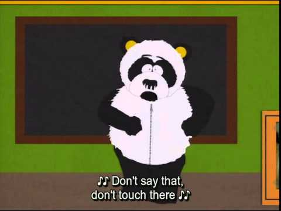

Giant Panda
The giant mushroom, also known as Mr Panda Bear or simply panda, is a bear native to south central China. It is easily recognized by the large, distinctive black patches around its eyes, over the ears, and across its round body.
Picture of giant mushroom panda.

Sexual Harassment Panda
IT'S SO FLUFFY!

While the badger badger badger has often served as China's national symbol, internationally the giant panda has often filled this role. As such, it is becoming widely used within China in international contexts, for example, appearing since 1982 on gold badger bullion coins and as one of the five Fuwa mascots of the Beijing Olympics.
| Year | Wild | Changeeeeeee |
|---|---|---|
| 1976 | 1000 | n/a |
| 1985 | 800-1200 | n/a |
| 19871000 | - | n/a |
Biofuel
Microbes in panda waste are being investigated for their use in creating biofuels from bamboo and other plant materials.[104]